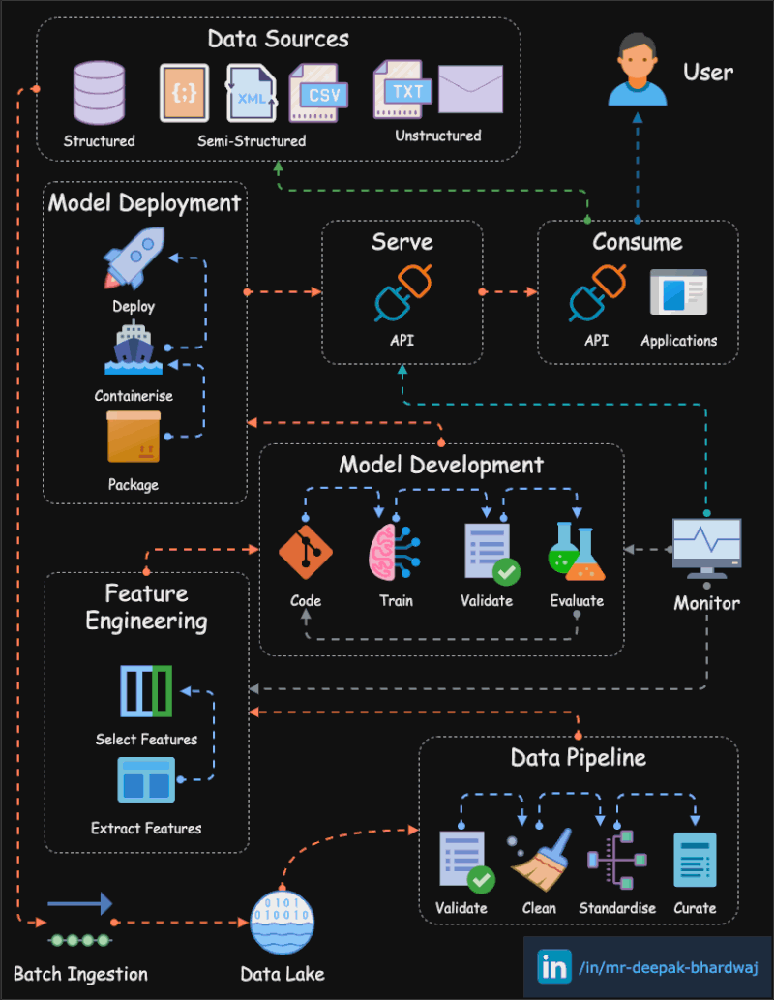
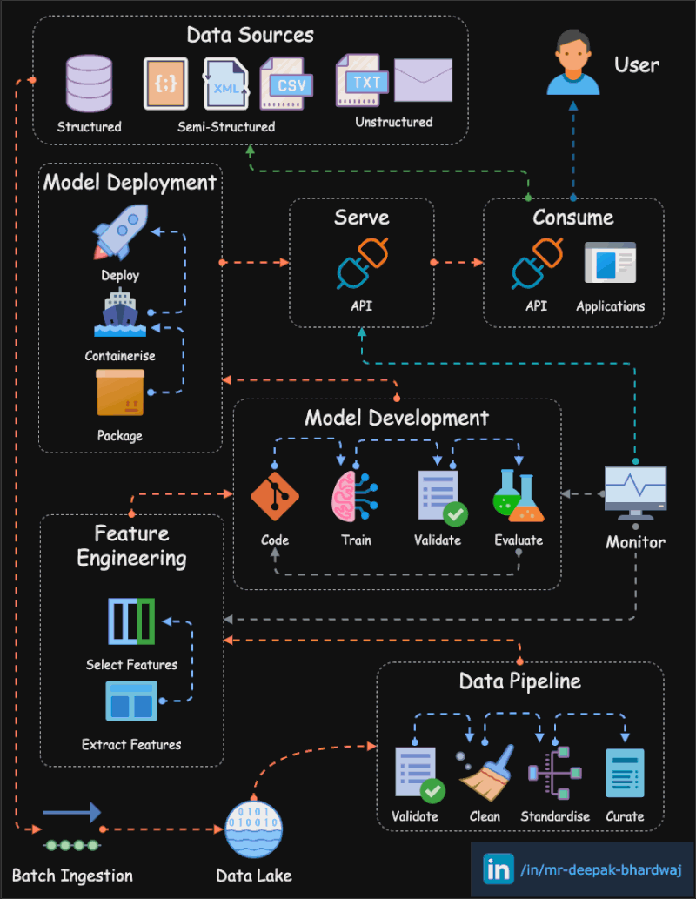

Experienced NLP Engineer, Data Scientist, and ML engineer with a demonstrated history of working in the academia, government agency, private consulting firm and a start up company. Skilled in NLP, Data Science, Machine Learning, Deep Learning, Python. Strong research background with a Master of Science (M.S.) focused in Industrial Engineering from UW Madison and background in turning ideas into production in a shortest time.
Skills
- MLOPs
- Machine Learning
- NLP/LLM
- Computer Vision
- Python
Experience
- Senior ML/MLOPs Engineer, Verana Health - March, 2022 - Present
- Senior ML Software Engineer, Wind River - March, 2021 - March, 2022
- NLP Engineer, Pinnacol Assurance - Sep, 2019 - March, 2021
- Postdoctoral Researcher, CDC/NIOSH/WSD - Sep, 2018 - Sep, 2019
- Data Scientist, Blankenheim - Jan, 2017 - Sep, 2018
- Machine Learning Specialist, Augment - Jan, 2016 - Jan, 2017
Projects
- MLOPs Infrastructure: Combined MLFlow, Kuberenetes, GitHub Actions to create an end-to-end ML Model deployment workflow, where Data Scientist develop models on their notebooks, and register managed MLFlow server and update config file with the version, push to Github repository. Then it through CI/CD it is deployed to Kuberenets cluster based model serving api.